1월 겨울, 아이들 손끝에서 탄생한 나만의 겨울옷 꾸미기 ❄️
안녕하세요, 생각공작소입니다. :)
새해가 밝고 본격적인 겨울 추위가 찾아온 1월,
생각공작소 아이들은 특별한 미술 활동을 진행했습니다!
바로 나만의 겨울옷 꾸미기 활동이에요. ❄️🧣
추운 겨울, 우리를 따뜻하게 지켜주는
모자, 목도리, 장갑, 스웨터를 아이들의 상상력으로
알록달록하게 꾸며보는 시간이었답니다. 🎨
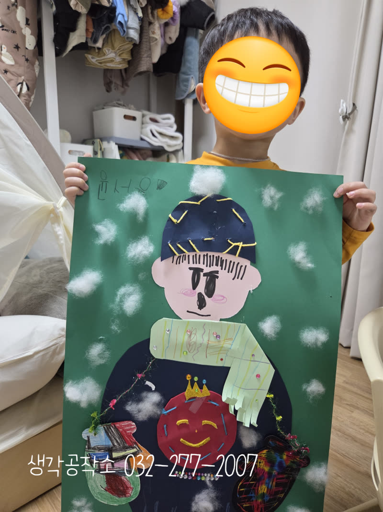
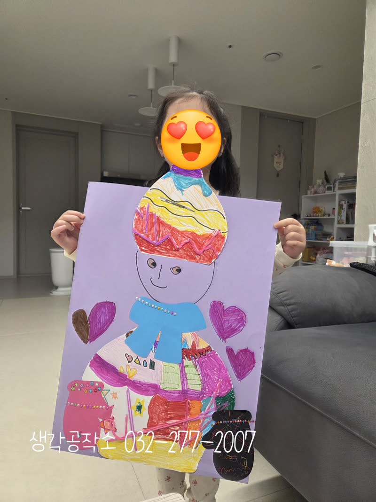
"선생님, 오늘은 뭐 만들어요?"
"오늘은 특별한 겨울옷을 만들 거야!"
테이블 위에 놓인 큰 도화지와
알록달록한 색종이, 반짝이는 스팽글, 털실, 마커들.
"우와! 이걸로 뭘 만들어요?"
아이들의 눈빛이 반짝이기 시작했습니다. ✨
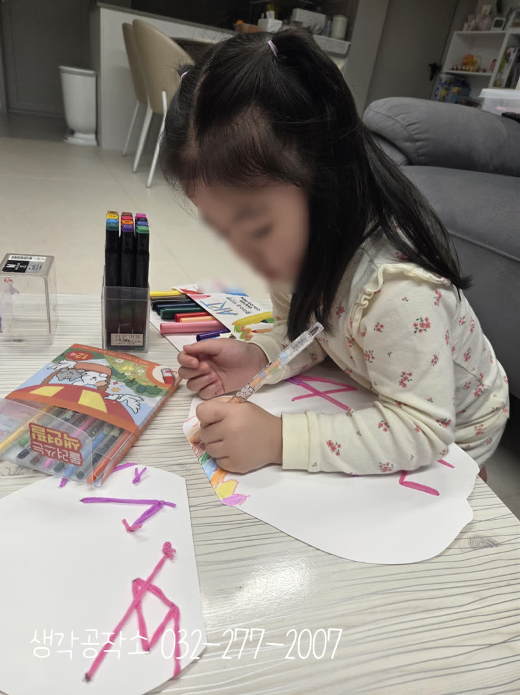
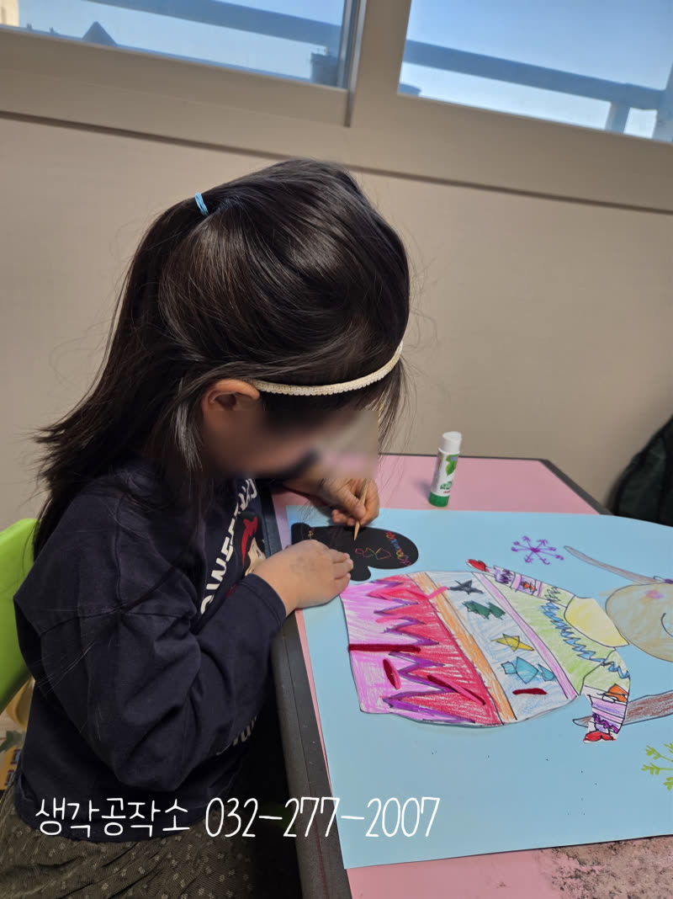
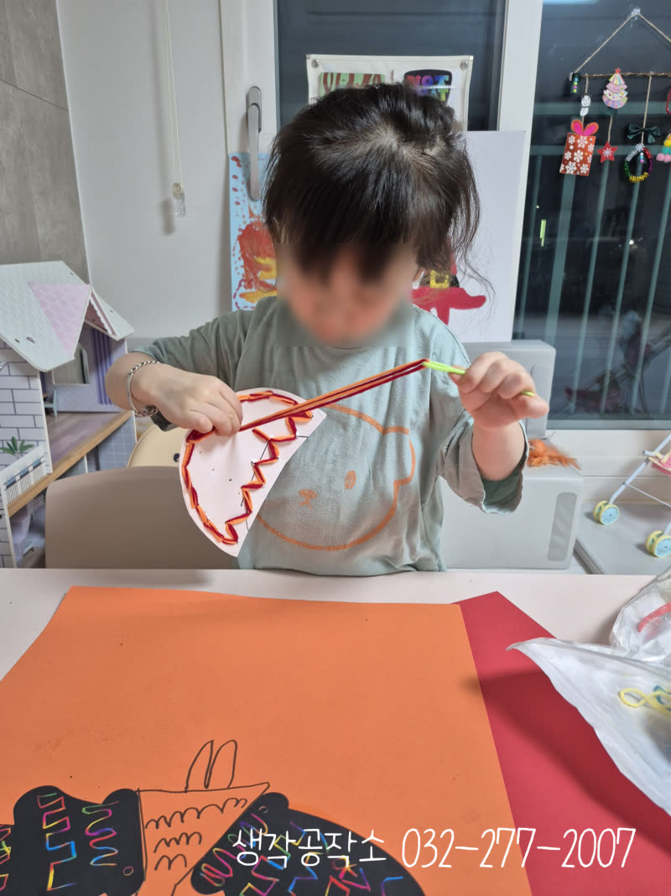
먼저 도화지 위에
그려진 커다란 사람 모양 위에
겨울옷을 입혀주기 시작했어요.☃️
모자, 목도리, 스웨터, 바지, 장갑, 신발까지
아이들이 직접 색을 고르고 그려 넣었답니다.
"저는 분홍색 모자 만들 거예요!"
"저는 무지개 색으로 할래요!"
저마다 좋아하는 색깔로
겨울옷을 채워가는 아이들의 손길은 진지했어요. 🌈
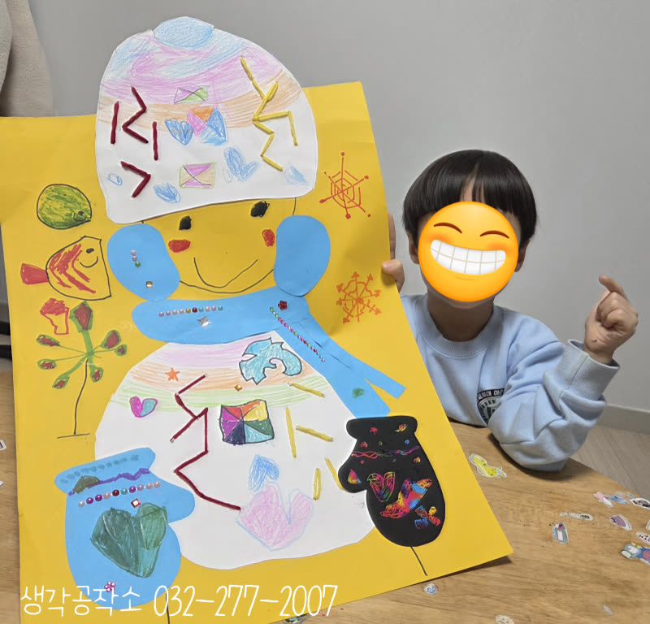
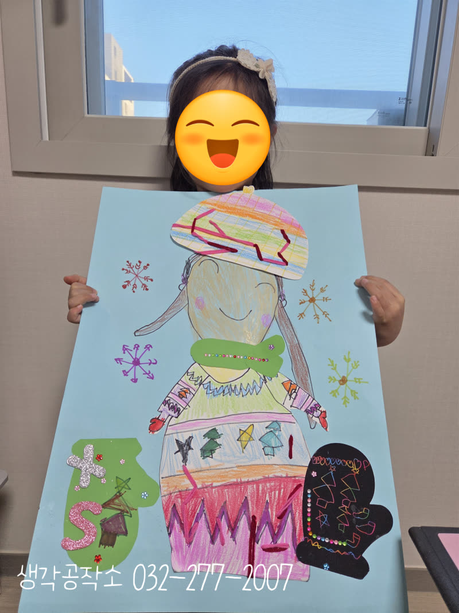
색칠이 끝나면 본격적인 꾸미기 시작!
털실을 돌돌 말아 모자 위에 붙이고,
반짝이는 스팽글로 옷을 장식하고,
색종이를 오려 무늬를 만들었어요.
"선생님, 여기 반짝이 붙여도 돼요?"
"이 털실로 목도리 만들래요!"
꼬마 손가락으로 하나하나 정성껏 붙이는 모습에서
소근육 발달과 집중력이 자연스럽게 키워졌답니다. 👐
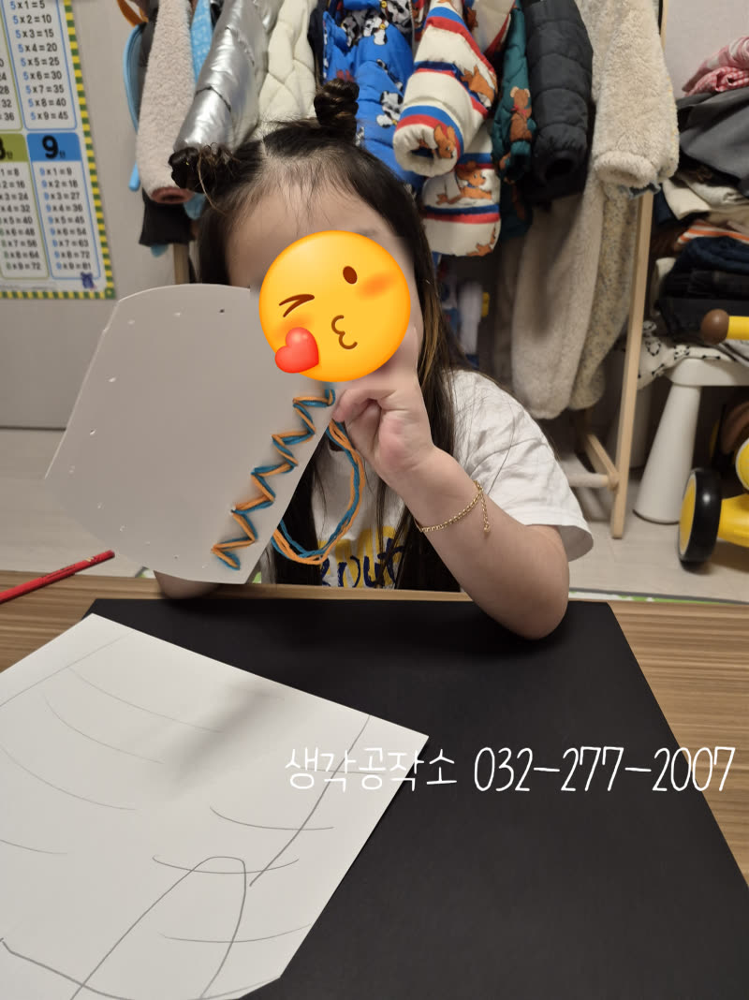
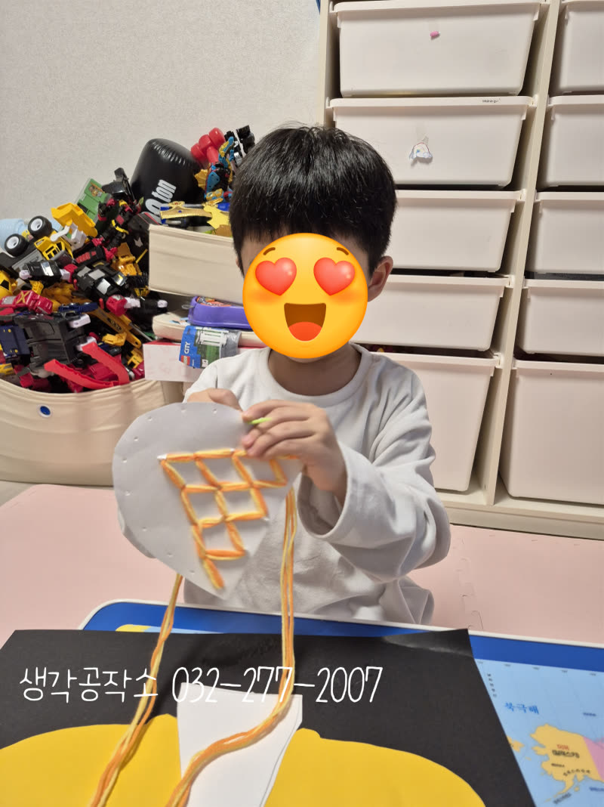
어떤 친구는 알록달록한 무늬의 스웨터를,
어떤 친구는 반짝이는 장갑을,
어떤 친구는 털실로 따뜻한 목도리를 만들었어요.
같은 활동이지만 아이들마다
완전히 다른 겨울옷이 탄생했습니다. 🧥
스크래치 종이로 검은 배경을 긁어
화려한 무늬를 만든 친구도 있었어요!
손끝에서 자신만의 디자인을 완성하는 과정 속에서
아이들의 창의력이 쑥쑥 자랐답니다. 🎨
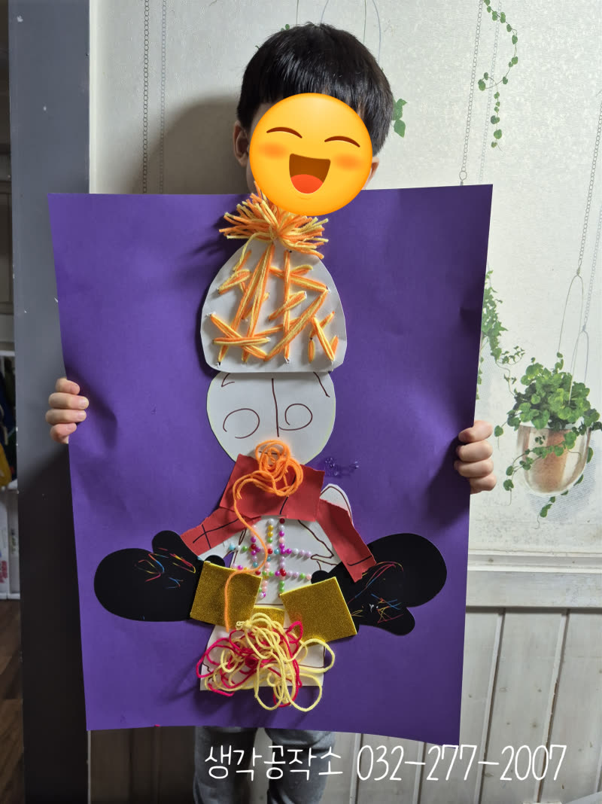
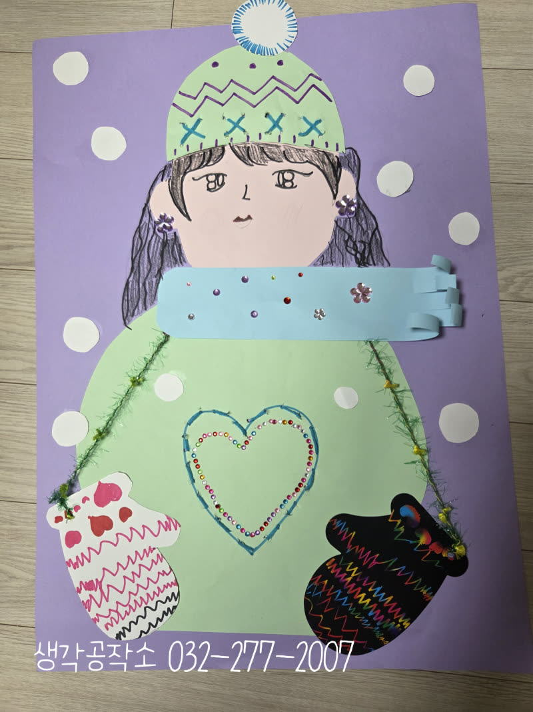
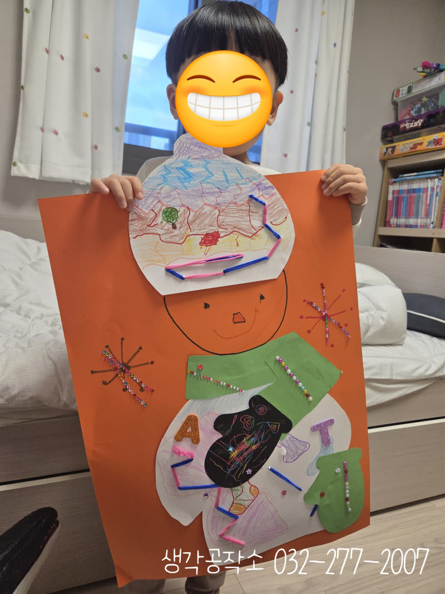
"선생님, 다 됐어요!"
"제 겨울옷 좀 보세요!"
완성된 작품을 두 손으로 들어 올린 아이들
빨간 모자를 쓴 친구, 무지개 스웨터를 입은 친구,
반짝이 가득한 장갑을 낀 친구까지.
모두가 자랑스럽게 웃으며 자신의 작품을 보여주었습니다. 😊
"이거 제가 다 꾸민 거예요!" "멋있죠?"
그 당당한 목소리에서 자신감과 성취감이 가득 느껴졌답니다. 💕
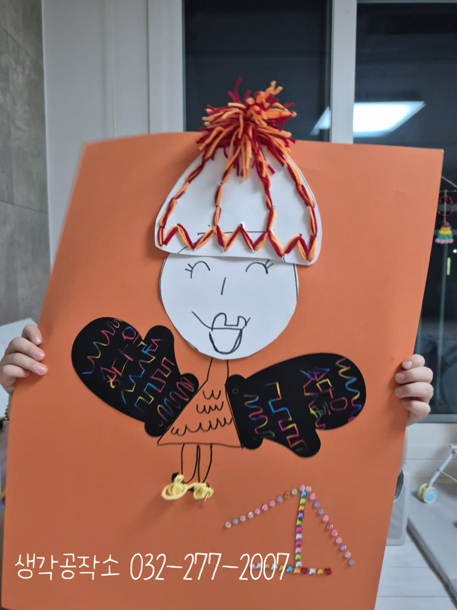
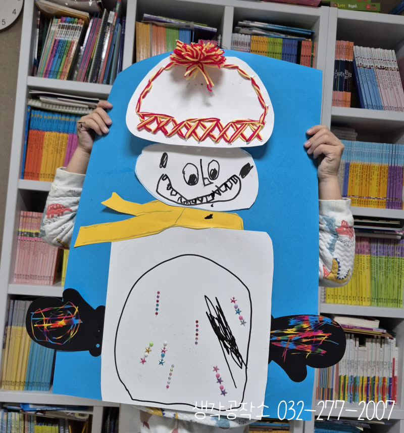
단순히 그림을 그리고 꾸미는 것을 넘어
겨울 계절을 이해하고,
다양한 재료를 만지며 촉감을 발달시키고,
색과 무늬를 선택하며 창의력을 키우고,
작은 장식을 붙이며 소근육을 발달시키고,
완성된 작품을 통해 성취감을 얻는
모든 과정이 아이들의 성장이었답니다. 🌟
생각공작소는 아이들이 계절을 온몸으로 느끼고
자신만의 방식으로 표현할 수 있도록
언제나 함께하겠습니다. 🙌
아이들의 가정에서 1:1로 진행하며,
아이들의 오감을 자극하고 창의력과 집중력을
자연스럽게 키우는 맞춤형 프로그램입니다.
단순히 만들기를 가르치는 것을 넘어,
아이들이 스스로 탐색하고 표현하며
성장할 수 있도록 세심하게 이끌어갑니다.
오감 쑥쑥! 생각 쑥쑥!
📞 생각공작소 032-277-2007